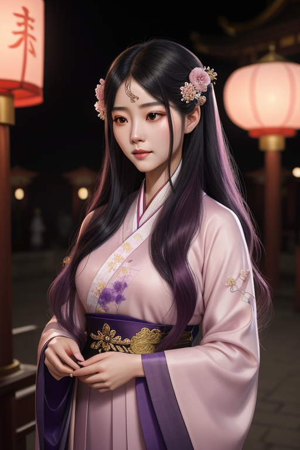

周芷若
汉水渔家女→峨嵋掌门→武林魔头→幡然悔悟。周芷若是金庸笔下最完整的黑化与救赎弧线——她让人恐惧，更让人心疼。
人物小传
| 姓名 | 周芷若 |
| 别名 | 峨嵋派第四代掌门 |
| 身份 | 峨嵋派掌门、张无忌的青梅竹马 |
| 师承 | 灭绝师太 |
| 武功 | 九阴白骨爪、峨嵋剑法、白蟒鞭 |
| 性格 | 温柔→阴狠→悔悟（完整的黑化弧线） |
| 爱情 | 张无忌（刻骨铭心的初恋与伤） |
| 结局 | 幡然醒悟，回归正道 |
周芷若是金庸笔下最成功的"黑化"角色。从温柔如水的渔家女到心狠手辣的峨嵋掌门，她的人生轨迹是因爱生恨最完整的教科书。她的可怕在于：你完全理解她为什么变成这样。
性格分析
金庸笔下最完整的黑化弧线
周芷若的前后变化，是金庸所有角色中最剧烈的。她小时候在汉水边给张无忌喂饭的场景，是全书最温暖的画面之一。那个时候的她，温柔、善良、充满同情心。
但在光明顶上，张无忌当着天下人的面选择了赵敏，周芷若的世界从此崩塌。她不是单纯的"嫉妒"——她是一种"我付出了一切，你却选了别人"的绝望。
灭绝师太临终前逼她发的毒誓（"若与张无忌结为夫妻，则父母九泉之下不得安宁"），更是压垮她的最后一根稻草。她陷入了进退两难的绝境：爱一个人是对父母的背叛，不爱这个人是对自己的背叛。这种撕裂无法和解，最终转化为对全世界的恨。

命运轨迹
奇遇与转折
倚天剑和屠龙刀的秘密
周芷若从荒岛上偷到了倚天剑和屠龙刀——这本来是金庸世界中最强大的两件兵器。但她的"奇遇"不是得到了力量，而是被力量吞噬。九阴白骨爪让她武功大进，但也让她失去了自我。力量本身没有对错，但获取力量的方式定义了你是谁。
武功绝学
九阴白骨爪
梅超风版的九阴白骨爪以妖异著称，周芷若练的是速成版——以阴狠见长。她可以不动声色地杀人于无形，这让整个武林都恐惧不已。
情感世界
对张无忌：从爱到恨再到放下
周芷若对张无忌的感情变化是全书最核心的情感线之一。她爱的不是张无忌这个人，而是"和张无忌在一起的未来"。当这个未来被赵敏夺走时，她失去的不是一个男人，而是整个后半生。
但最终她放下了。不是因为原谅，而是因为累了、悟了。这种放下比黑化更难——因为黑化是堕入黑暗，放下是从黑暗中爬回来。
趣事典故
名场面：屠狮大会
周芷若在屠狮大会上以九阴白骨爪大杀四方，手段之狠辣令所有人胆寒。她踩着江湖群雄的脸面走上巅峰——但这一刻的"胜利"，恰恰是她最孤独的时刻。高高在上却无人可信——这是所有黑化角色的终极诅咒。
现实启示
嫉妒与自我毁灭
周芷若最大的教训是：嫉妒是一把双刃剑——你以为是武器，其实它也在杀你。她用嫉妒驱动自己变强，但也用嫉妒毁掉了自己原本美好的一切。
黑化的代价
黑化看起来是一条"捷径"——不再忍耐、不再善良、不再受限。但这条路的尽头是孤独。周芷若在屠狮大会上无人能敌，但她比任何时候都更孤独——这就是黑化的真正代价。
1. 不要为了报复任何人而毁掉自己。
2. 放下不是原谅别人，是放过自己。